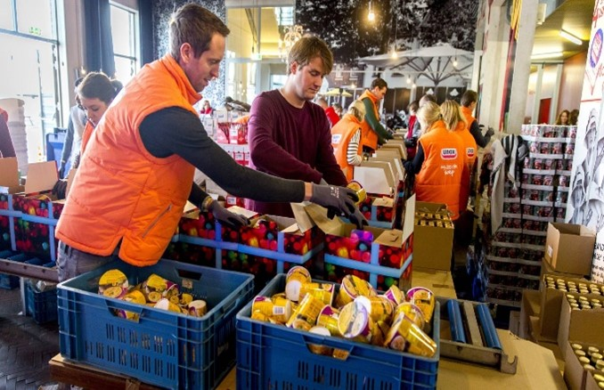
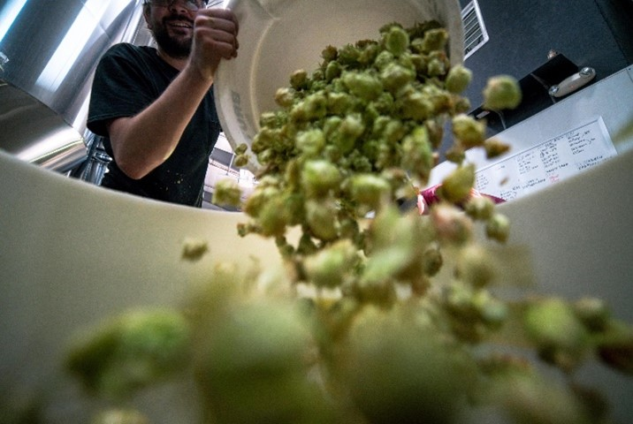
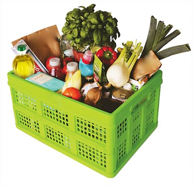
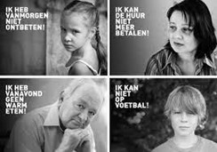
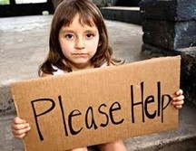
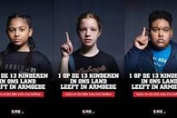
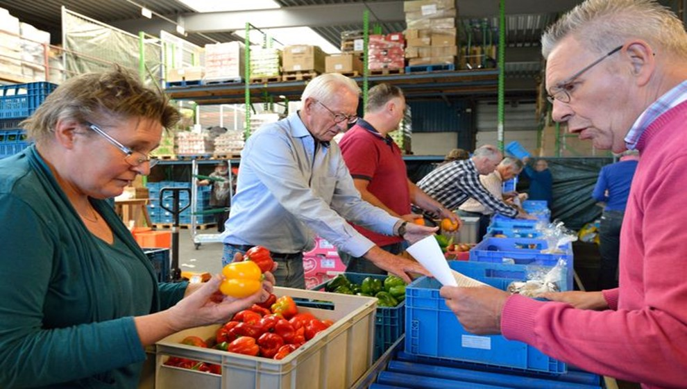
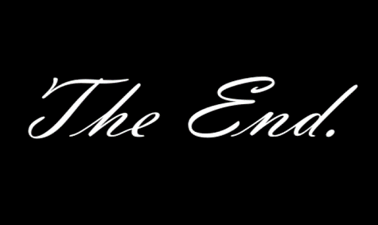

Hoi juf Maud, ik houd mijn digitale werkstuk over de voedselbank. Ik heb dit onderwerp gekozen omdat ik het thuis erg goed heb en ik mij niet kan voorstellen hoe het is om in armoede te leven. Ook hoop vind ik het erg interessant wat de voedselbank doet. Ik hoop te leren over waarom er een voedselbank bestaat, hoe de voedselbank is ontstaan en hoe we de voedselbank kunnen helpen. Hoe de website werkt: druk op de knop en ga verder! Ik wens je veel leesplezier!😊
Hoofdstukken:
De voedselbank is een stichting die zich inzet tegen armoede. Dat doen ze door middel van voedsel maar ook door kleding/speelgoed vrij ter beschikking te stellen. Als je hier wil werken dan doe je dat vrijwillig. Er werken zo’n 6500 mensen in deze sector. Zij zijn verspreid over heel Nederland in 140 filialen, die zorgen ervoor dat mensen die eten nauwelijks/niet kunnen betalen toch eten en drinken kunnen krijgen. Voedselbanken Nederland is de vereniging die ervoor zorgt dat er eten is. Ook regelen zij dat het eten bij al die filialen terecht komt. De voedselbank in Nederland kwam wel pas vrij laat, hij bestaat nu namelijk pas 20 jaar. In België was ze er al eerder, in 1986.
Het idee kwam in Nederland door Clara Sies. Zij zat zelf in armoede en kreeg elke week wat gratis eten mee van de groenteboer, hierna kreeg ze ook wat van de bakker mee en het werd steeds meer en meer. Grote bedrijven zoals de Lidl gaven spullen die waren afgekeurd zoals aardbeienjam met een verkeerd dopje of limonade die niet vol genoeg zat allemaal weg aan Clara. Normaal zouden ze per 1 kilo 10 euro vernietigingskosten moeten betalen. Nu was het gratis, dus Clara kreeg samen met haar man allemaal producten en zij zorgden ervoor dat het bij families in armoede kwam.
Er is niet veel informatie te vinden over hoeveel pakketten er worden weggeven per jaar door de voedselbank. Ik vond alleen de informatie over 2020. In 2020 werden er zo’n 160.500 mensen geholpen. Dat is net zoveel als 3 keer een voetbaltribune vol. Er werden ruim 44 miljoen pakketten uitgedeeld en dat heeft een financiële waarde van ongeveer 74 miljoen euro. Je hoeft zelf niks te betalen om eten te krijgen bij de voedselbank, wanneer je in je eentje moet je leven van max 230 euro per maand aan voedsel/kleding. Er wordt gekeken naar je maandelijkse inkomen. Daar halen ze alle vaste lasten vanaf. Als je dan minder dan 230 euro per maand aan voedsel en kleding overhoudt dan kom je dus in aanmerking voor de voedselbank. Zit je daarboven dan kom je niet in aanmerking voor de voedselbank. Het aantal leden bij de voedselbank is enorm gestegen. Dat komt mede door de corona crisis, alles is duurder geworden en de inflatie van nu maakt het ook niet beter. Het aantal leden is met ruim 7,2% gestegen. Dit is super veel tegenover andere jaren. De voedselbank wordt nu dus steeds meer een noodzaak.
Een mens eet gemiddeld 438 kilo voedsel per jaar. Ook gooien we gemiddeld 34 kilo voedsel per jaar weg per persoon en spoelen we ook nog zo’n 45 liter water door de gootsteen. Dit is natuurlijk enorm zonde en we proberen hier tegenin te gaan. Er staan ook ‘ten minste houdbaar tot’ en ‘te gebruiken tot’ op verpakkingen. Maar waar staat dat eigenlijk voor? Een t.g.t. datum is voor verse producten en producten die snel bederven. Denk hierbij aan melk, fruit en gebak. Na de t.g.t. datum is het product eigenlijk niet meer te gebruiken. Na de t.h.t. datum kan het product de smaak/kleur verliezen maar nog wel gewoon veilig gegeten worden.
Mensen gooien meestal producten weg na de t.h.t. datum. Als een product over de datum is kan je het nog wel eten maar er is een grote kans dat je ziek wordt. Vlees kan je helemaal niet meer eten na de t.g.t. datum. Als je banaan wat aan de bruine kant wordt kan je er altijd nog bananenbrood van maken zonder ziek te worden. Meestal worden alle producten weggegooid na hun t.g.t. datum. Daarom ontvangt de voedselbank ook vooral producten die lang houdbaar zijn. Denk hierbij aan lang houdbare melk, producten in blik en sauzen.
Er bestaan wel een paar ideeën tegen voedselverspilling. Er is een app genaamd too good to go en dat is een app met de restjes eten die overblijven. Dat kan van de bakker zijn maar ook zomaar van een restaurant. De prijzen liggen tussen de 4 en de 10 euro per pakket. Wat er in het pakket zit is enorm verschillend. Bij de bakker kunnen het 2 saucijzenbroodjes zijn maar ook zomaar 3 donuts, 4 croissants en 1 frikandelbroodje. De 2 nadelen hiervan zijn: het eten is niet heel lang meer houdbaar en moet dus die dag op. Ook moet je de producten zelf komen ophalen. Ik vind dit zelf een goed idee en ga dit ook zeker een keertje uitproberen!
Wat kan je zelf doen tegen voedselverspilling? Het eten dat je overhoudt kan je altijd invriezen. Dan kan je het de volgende dag gewoon weer opeten. Ook kan je iets minder eten maken zodat je niks overhoudt en als je dan nog iets overhoudt kan je altijd nog iets te eten pakken. Het is dus belangrijk dat we minder gaan verspillen. Want het is ook nog is slecht voor het milieu. De energie die wordt gebruikt om het product te reinigen, te koelen, verpakking te regelen en op transport te doen gaat ook verloren als je je eten weggooit. Ook bij de voedselproductie komt er veel co2 vrij, dit heeft dus een grote impact op het milieu.
De voedselbank is een stichting, ze kopen zelf geen eten. Dit doen ze door middel van acties, er staan soms mensen van de voedselbank bij de Albert Heijn. Die geven een lijstje mee wat ze op dat moment nodig hebben. Dan kan je er zelf voor kiezen om iets te halen. Maar de voedselbank heeft ook sponsors die geld doneren. Wat doen ze dan met dat geld? Van dat geld betalen ze de transport en de verpakking. Het ligt er dus ook enorm aan of er veel in de doos zit, het hangt namelijk af van de mensen en afgekeurde producten. De voedselbank zorgt er wel voor dat er minimaal 20-25 verse producten in je pakket zitten. Je kan niet leven van dat pakket, het is een aanvullingspakket.
Ook hoef je niet perse arm te zijn om in aanmerking met de voedselbank te komen. Het is meer bedoeld als steuntje in de rug voor de mensen die het nodig hebben. Stel je woont in een gezin met 4 personen en de ouders hebben een inkomen van 5850 euro per maand. Ze maken een fout met investeren en verliezen alles? Dan mogen zij ook gewoon bij de voedselbank komen. Dat is waarschijnlijk maar tijdelijk want je mag ook maar max 3 jaar lid zijn bij de voedselbank. Dat komt omdat de voedselbank alleen noodhulp is, 3 jaar is dus ook de maximum periode dat iemand in schuldsanering mag zitten. De meeste mensen die lid zijn van de voedselbank zijn binnen 3 maanden klaar met de voedselbank.
De kosten van een pakket zijn 5 euro. Dit wordt dan ook betaald door de grote filialen. Zoals de Aldi, Albert Heijn, Hoogvliet en de Lidl. De vrijwilligers die hier werken hebben de rol om de pakketten klaar te maken en op vervoer te doen. Zwervers mogen geen gebruik maken van de voedselbank, dat komt omdat zij een aparte hulpverlening krijgen. Zij krijgen daar een dak, brood, douche en bed en mogen om die reden niet naar de voedselbank. Zelf geef ik altijd iets aan de voedselbank. Het hoeft dan niet veel en duur te zijn maar het idee dat ik mensen heb gesteund voelt wel goed.
Wat veel mensen niet weten is dat het niet alleen maar eten hoeft te zijn wat je kan doneren. Het mag ook speelgoed en knuffels zijn, wel moet alles nog nieuw zijn vanwege de hygiëne wet. Ik ben zelf van plan om wat speelgoed te doneren. Dat speelgoed wordt meestal gebruikt als cadeautje.
In Nederland is best veel armoede; dit wordt geschat op zo’n 1 miljoen mensen. We noemen in Nederland iemand arm wanneer die onder een bepaalde inkomensgrens zit. Het gemiddelde inkomen is netto 2.245 euro per maand. Zit je iets daaronder ben je niet arm, zit je er flink onder noem je iemand arm. In 2021 is gemeten dat maar 176.000 mensen boven de 100.000 euro verdienen per jaar. Dat is veel minder dan de hoeveelheid mensen die in de bijstand leven. Dat zijn er namelijk 476.000. Die leven netto van ongeveer 1000 euro per maand, het klinkt nu veel maar hier moet je dan ook alles van doen. Zoals de huur betalen, boodschappen, kleren, misschien wel kinderen en je verzekeringen. Zo kan ik nog wel even doorgaan. Afijn het is dus niet ontzettend veel waar je van moet leven.
Stel je moet rondkomen van 20 euro voor boodschappen per week, dan kom je in aanmerking voor de voedselbank maar dat is slechts een aanvullingspakket. Dus moet je ook nog boodschappen doen. Maar hoe? Ten eerste: koop geen a merken, dit is duurder en er zit meestal geen verschil in smaak. Denk aan de merken: gwoon, en huismerken. Kijk ook in de reclamefolders of er korting is op een bepaald product. Ook kan je je boodschappen op het einde van de dag doen, de prijzen zijn dan goedkoper op sommige producten. Als je lege flessen hebt kan je ook die inleveren in ruil voor geld.
Om de ernst van de armoede te begrijpen heb ik wat voorbeelden geprobeerd te zoeken over wat armoede voor mensen betekent. Dit doe ik door middel van plaatjes, deze staan hieronder.
  Zoals ik al eerder heb verteld maak je de voedselbank het meest blij met lang houdbaar voedsel. Maar de voedselbank is ook enorm blij met donaties. En veel! Dat kan al vanaf 5 euro. Hiermee steun je een gezin aan een hele week eten. De overheid helpt eigenlijk niet met de voedselbank. Er is wel een uitzondering gemaakt, zo hebben ze in 2020 4 miljoen euro gekregen. Die heeft de overheid gegeven door de corona crisis. Dat kwam omdat er toen ontzettend veel mensen in financiële nood zaten.
Ik heb zelf ook nog een idee voor de voedselbank. We kennen allemaal wel fight For cancer, swim For cancer etc. dit zijn allemaal grote evenementen die enorm veel geld binnenhalen om kanker te onderzoeken. Als de voedselbank ook dit soort evenementen zou organiseren zouden zij geld op kunnen halen om meer in de pakketten te kunnen stoppen of dat ze meer mensen kunnen helpen. Ook zouden zij nog een social media account kunnen aanmaken waar ze aan kinderen uitleggen over wat de voedselbank is etc. Zo zouden ze nog bekender worden!
Er zijn al heel veel manieren waar je de voedselbank mee kan helpen. Denk hierbij aan je belastingvoordeel te doneren😊. Je kan een x- bedrag van je nalatenschap doneren. Dit moet je dan wel in je testament vast laten leggen. Mijn idee wat je zou kunnen organiseren is een soort grote club actie idee, zo hebben de kinderen plezier met het verkopen van lootjes en verdiend de voedselbank er ook nog wat mee. Ook als je meedoet met de postcode loterij steun je de voedselbank ook, dat was al 1 miljoen euro wat naar de voedselbank is gegaan. Gelukkig zetten hele grote bedrijven zich ook in voor de voedselbank. Ook is er ooit een idee bedacht om een moestuin te maken die speciaal is voor mensen in armoede, zij mogen dit zelf onderhouden en mogen dus ook deze groentes gebruiken. Grote bedrijven zoals de Hoogvliet en Albert Heijn doneren soms ook 1 euro op een bepaald product, stel je koopt borden bij de Albert Heijn voor 5 euro dat er steeds 1 euro naar de voedselbank gaat. Ik ga deze manieren zeker een keertje uitproberen!
Mijn ervaring met het digitale werkstuk: Ik vond het erg leuk om te maken maar ik ben wel enorm laat begonnen. Dit kwam doordat ik het de hele tijd aan het uitstellen was. Ik ben begonnen door bij elk hoofdstuk met 10 vragen maken. Die beantwoord ik en maak ik een goed verhaal van. Zo ben ik erg ver gekomen! Ik moet nog wel leren plannen, dat ga ik zeker oefenen!
